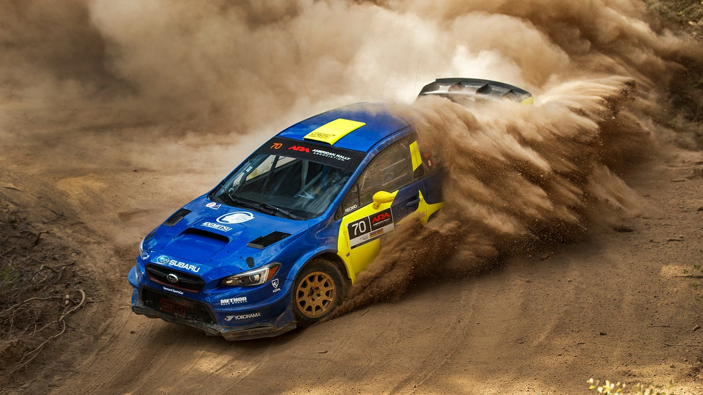
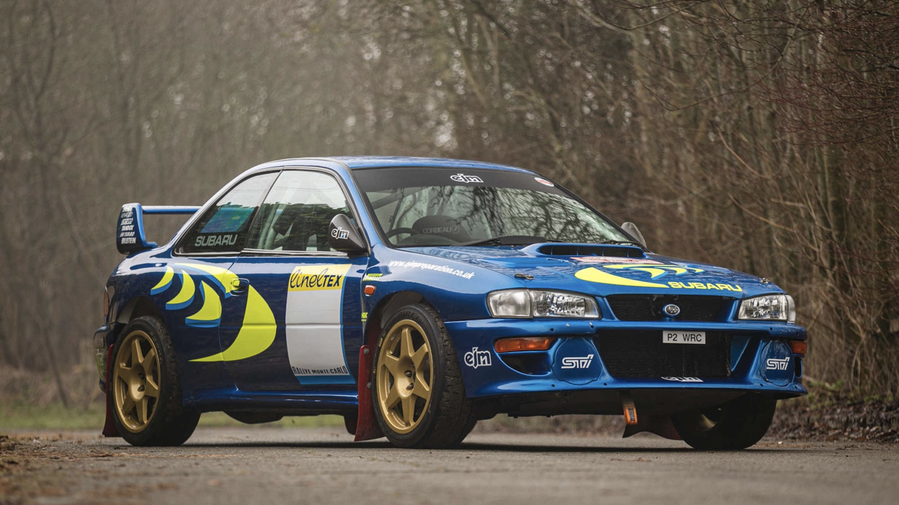
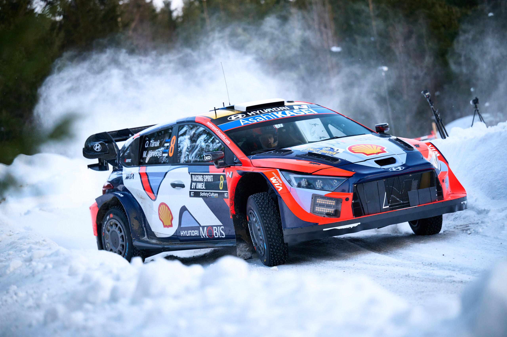
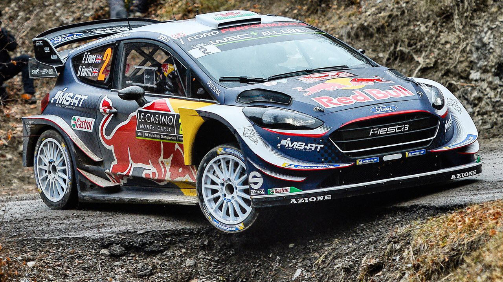

Открийте света на рали състезанията – предизвикателство, техника и природа
Рали състезанията са вид моторни надпревари, които се провеждат извън затворени писти – по обществените пътища, горски маршрути, планински терени и други естествени трасета. В тях участват два души – пилот и навигатор – които заедно преодоляват специални етапи с висока скорост и точна навигация.
За разлика от пистовите състезания, при които трасето е фиксирано и познато, в ралитата условията се променят динамично – кал, сняг, чакъл, асфалт. Това изисква висока адаптивност и перфектна комуникация в екипа.
Рали състезанията започват още в началото на 20-ти век, като едни от първите са били дълги и изтощителни маршрути между градове – например Рали Монте Карло, което стартира през 1911 г. С времето ралитата се превръщат в професионален спорт с различни категории и шампионати.
През 1973 г. е създаден Световният рали шампионат (WRC), който обединява най-големите състезания по света – от снежна Швеция до пясъците на Кения. Легендарни пилоти като Колин МакРей и Себастиен Льоб са сред емблемите на този спорт.
Съществуват различни типове ралита – класически WRC етапни състезания, рали-рейдове като "Дакар", спринтови ралита и хибридни форми. Всеки от тях изисква специфичен подход, техника и подготовка.
Рали-рейдовете са дълги многодневни състезания, често през пустини или екстремни терени, докато класическите WRC етапи са бързи отсечки в разнообразни условия. Някои аматьорски състезания са част от национални първенства и дават шанс на нови таланти.
Днес рали състезанията разчитат на високотехнологични автомобили с напреднали системи за управление, окачване и навигация. Във WRC се използват хибридни задвижвания, като част от усилията за устойчивост.
Сигурността на състезателите е от най-голямо значение – специални предпазни клетки, пожарогасителни системи и GPS проследяване са част от стандартното оборудване. Автомобилите са разработвани така, че да бъдат издръжливи и в същото време изключително бързи.
Рали Монте Карло е едно от най-престижните състезания в WRC календара, с легендарни етапи в Алпите, често включващи сняг и асфалт в едно състезание.
Официален сайтРали Дакар е най-известният рали-рейд, преминаващ през пустини и екстремни условия в Южна Америка и Близкия Изток. Състезанието тества издръжливостта на хора и машини.
Официален сайтСветовният рали шампионат (WRC) е елитната сцена на рали състезанията, с надпревари на четири континента и участие на най-добрите пилоти и екипи в света.
Официален сайтРали България е най-известното родно рали състезание, част от Европейския рали шампионат (ERC), провежда се в живописни райони като Родопите и Рила.
Официален сайт